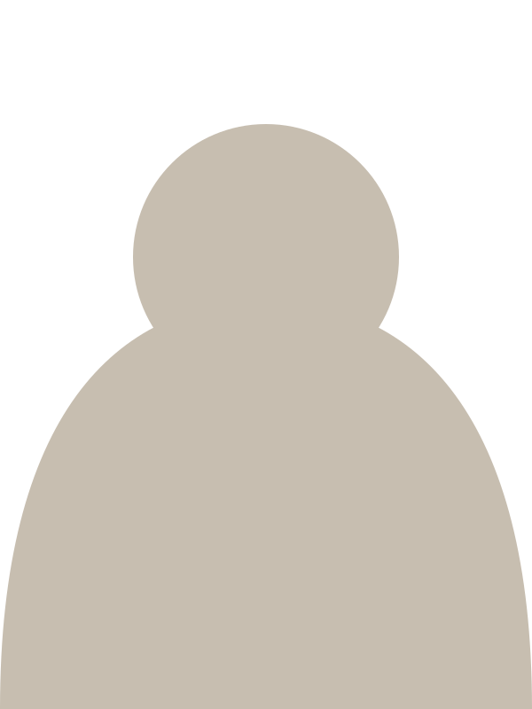

Масла · питание · образ жизни
Оценка состояния на ВедаПульс и аромазнакомство,
подбор масел dōTERRA и питания
Первое аромазнакомство — бесплатно
Любовь Иванова
специалист по рациональному питанию
Три ступени — глубину выбираете вы
Каждая ступень отдельно: можно остановиться на первой, можно дойти до программы
только при личной встрече
Знакомимся и смотрим, с чем вы пришли
бесплатно
двадцать минут
Оценка на ВедаПульс и три масла под ваше состояние сейчас
1 500 ₽
с сопровождением
Check-up и личный план питания и режима с сопровождением
25 000 ₽